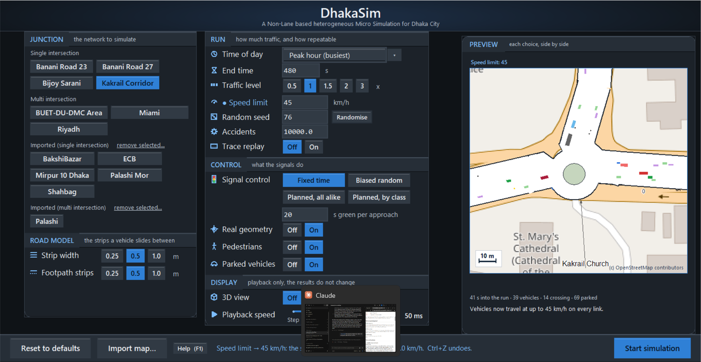
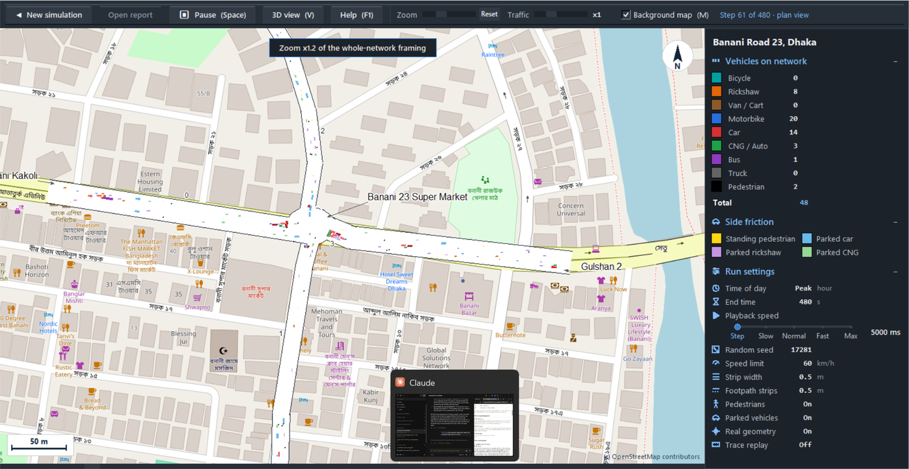
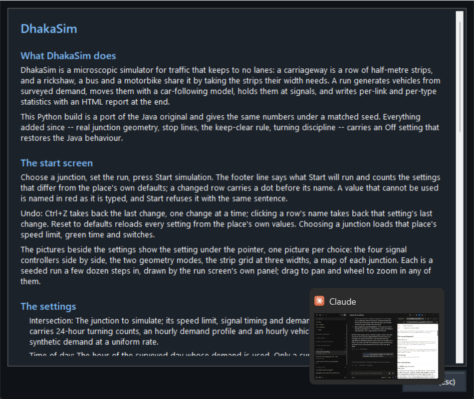

An inspection of the DhakaSim Python build as it stands on 15 October 2026: its start screen, run screen, map-import dialog, help page and run report, judged heuristic by heuristic, with every open issue rated on Nielsen's severity scale and a short list of what to fix first. ASM Nuruzzaman.
The evaluation follows Nielsen's heuristic evaluation procedure: one evaluator walks the interface twice, first to learn its flow and then to inspect each element against the ten heuristics, recording every violation with the heuristic it breaks and a severity. The owner set these heuristics as the basis for judging the screens on 6 October 2026, and the build was reworked against them over the following nine days; this document records where it has reached.
The walk covered six tasks: choose a junction and set up a run; change settings and take changes back; start, pause, zoom and switch views in a run; load the junction up while it plays; import a junction from a map; and find help. Three screens are reproduced below as they looked on the evaluation laptop (1536 by 793 pixels).
| Severity | Meaning, after Nielsen |
|---|---|
| 0 | Not a usability problem. |
| 1 | Cosmetic. Fix only if there is time. |
| 2 | Minor. Low priority. |
| 3 | Major. Important to fix. |
| 4 | Catastrophic. Must fix before release. |
One evaluator finds about a third of the problems a panel of five would, by Nielsen's own figures. Treat the issue list as a floor, not a census. No user study has been run.



The start screen's footer always says what Start will run, counts the settings that differ from the place's defaults, and marks each changed row with a dot. Every change produces a sentence naming the setting, its new value, its meaning and its old value. On the run screen the toolbar shows the step, the end time and the view every simulation step; a toast on the picture reports every zoom, view change, map toggle, traffic change and undo; the bottom bar shows progress. The import dialog has a progress bar driven by the worker's own log lines, and the map-fetch button changes its caption while it works.
Settings are worded as a reader thinks about them: playback speed as Step, Slow, Normal, Fast and Max rather than a frame delay in milliseconds; real geometry explained as medians and a roundabout ring rather than "Java parity"; places by name, each with a sentence about its surroundings; speeds in km/h, greens in seconds, traffic as a multiple of the surveyed rate. The signal controllers are named by what they do in the preview captions.
Ctrl+Z takes back the last change on the start screen, one change at a time, and the footer names what came back; clicking a row's name takes back that row's last change, and the name shows a hand while there is one. A typed value is one change however many keystrokes it took, and choosing a different junction is itself undoable. Reset to defaults reloads the place's own values. New simulation leaves a run at any point, asking first if it is unfinished; a view change reverses with the same key; the import picker has Close and Rebuild; imported networks can be removed and shipped ones cannot.
One palette and one set of controls across the start screen, the run screen, the import dialog, the help page and the HTML report. The same five-detent slider sets playback speed on both screens; the same row icons appear in the form and the sidebar; every choice is a row of cells with one filled and every switch an Off/On pair; keys are named on their buttons; Esc closes the help as it closes the import dialog.
A value that cannot be used is named in red as it is typed, and Start refuses it with the same sentence, so a traceback never reaches the reader. The junction picker turns its status red when a chosen junction has fewer than three legs and refuses a set of junctions that is not connected before anything is fetched. The map fetch refuses to overwrite hand-placed imagery. A playback value the slider does not offer is kept rather than snapped. Nothing the preview runs can leak into the run: a seeded run after previewing is byte for byte the run a fresh screen gives, and a test pins it.
Every choice of every setting has a picture beside it: the four signal controllers side by side with a line each, the two geometry modes, the strip grid at three widths, the map of each junction with a sentence on its surroundings, the five playback speeds with their milliseconds. The footer shows a row's explanation while the pointer is on it. The sidebar keeps the run's settings in view for the whole run, with the same icons as the form, and the report repeats them.
Keyboard shortcuts for pause, view, map, help and undo; wheel zoom and drag pan; Return in the import dialog's Where box previews the place. For anyone who does not need the window, a per-network defaults file, a command-line override for any parameter, a headless mode and a sweep harness. Randomise draws a fresh seed in one click.
The form chooses its density by measurement, so nothing is clipped and nothing is wasted; captions move to the footer when they do not fit; the Scale row left the form because it meant nothing to a reader, and the sentence under the map toggle went for the same reason; the picture column takes a third of the window and no more; the sidebar is built at the largest type that fits.
Error sentences name the setting and the rule ("End time must be a whole number of 1 or more") in the same place the status is shown. The import dialog reports which stage failed and leaves the network runnable when only the map or the road fit failed. A trace recording of another place is explained in the preview rather than shown as an empty road. A failed map fetch says so in a toast and leaves the button ready to try again.
F1, or a Help button on either screen, opens a help page in the window: what the simulator does, the start screen and its undo, every setting with its meaning and unit, the run screen's keys and controls, importing a map, and where results go. The settings section is generated from the same table the footer reads, and a test checks every label is on the page. The README documents every parameter and quirk, and each run's report explains every result and term.
| Heuristic | Rating | Open issues | Worst severity | Headline |
|---|---|---|---|---|
| 1. Visibility of system status | strong | 3 | 1 | Status everywhere; the scheduler's planning is the one silent process. |
| 2. Match with the real world | adequate | 2 | 1 | The controllers are named by what they do; strip width is still the model's word. |
| 3. User control and freedom | adequate | 3 | 1 | Undo and a confirmed Reset arrived on 15 October; no redo yet. |
| 4. Consistency and standards | strong | 1 | 1 | One vocabulary on both screens; two kinds of slider remain. |
| 5. Error prevention | strong | 2 | 1 | Bad values are refused in a sentence, never a traceback. |
| 6. Recognition rather than recall | strong | 2 | 1 | A picture for every choice; needs a wide window. |
| 7. Flexibility and efficiency | adequate | 2 | 1 | Keys, wheel, headless and sweeps; no presets. |
| 8. Aesthetic and minimalist design | strong | 2 | 1 | Density by measurement; the laptop rung is tight. |
| 9. Error recognition and recovery | adequate | 1 | 1 | Clear sentences for settings and for a failed fetch alike. |
| 10. Help and documentation | adequate | 2 | 1 | Help arrived on 15 October; it has no pictures yet. |
Twenty-four issues were found, none above severity 2. The four minor ones were fixed the same day and are marked closed above; the twenty that remain are cosmetic. The build has no major or catastrophic usability problem that this inspection could find.
The four minor findings were fixed on the day of the evaluation: Reset to defaults asks first, the sidebar uses the form's names, the planned controllers are named by what they do, and a failed map fetch says what to do. Of the cosmetic findings, these are worth the next hour:
What this evaluation does not cover. It is one evaluator's inspection, not a test with users, and it says nothing about whether a transport engineer reaches the right conclusions from the numbers the screens show. It covers the Python build's own screens; the HTML report was read but not inspected element by element.